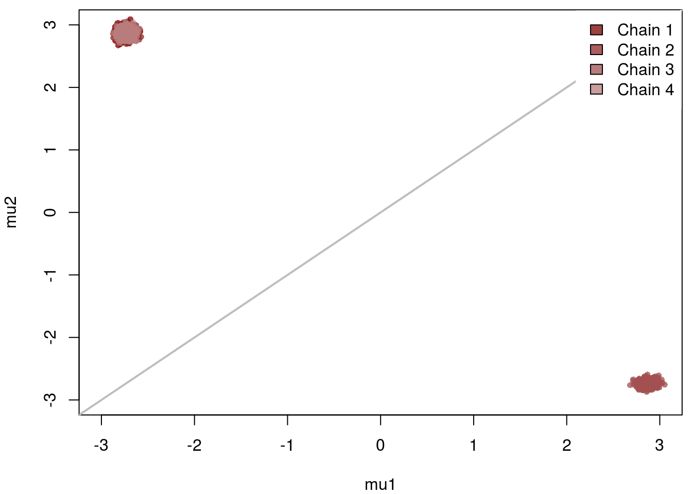
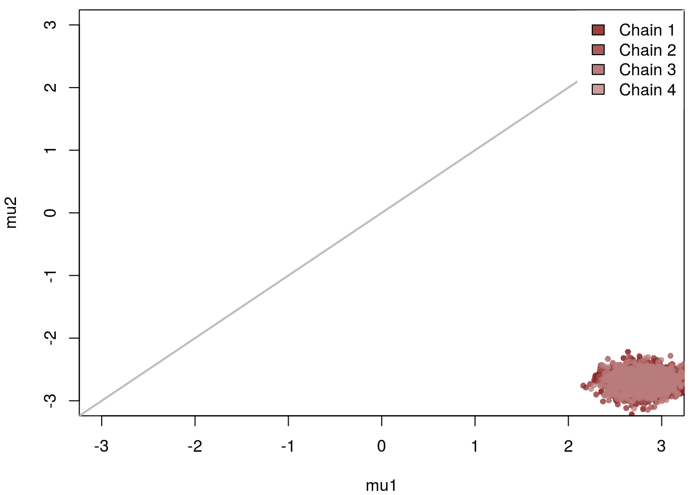
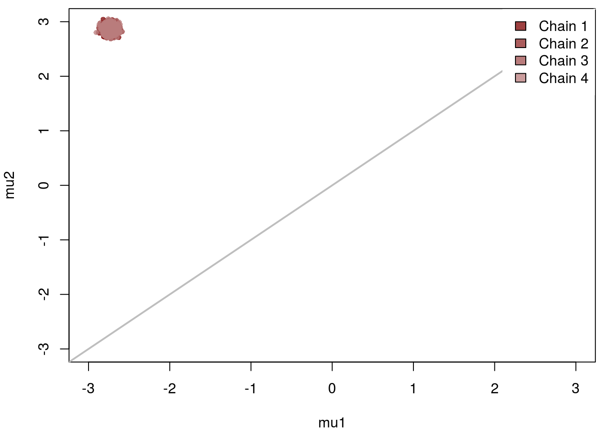
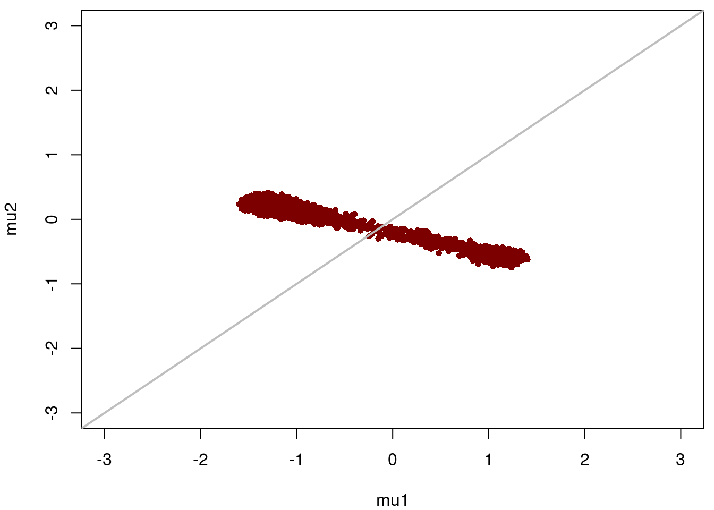
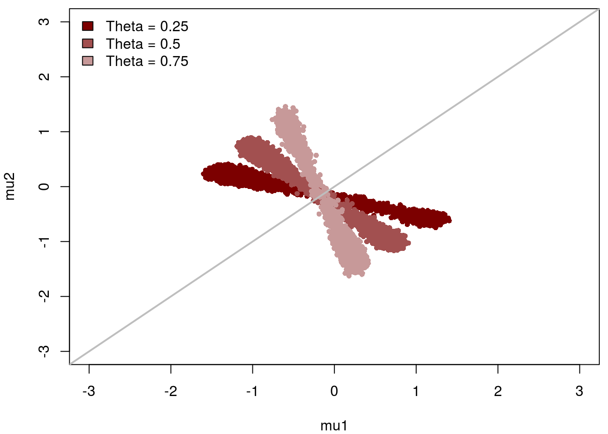
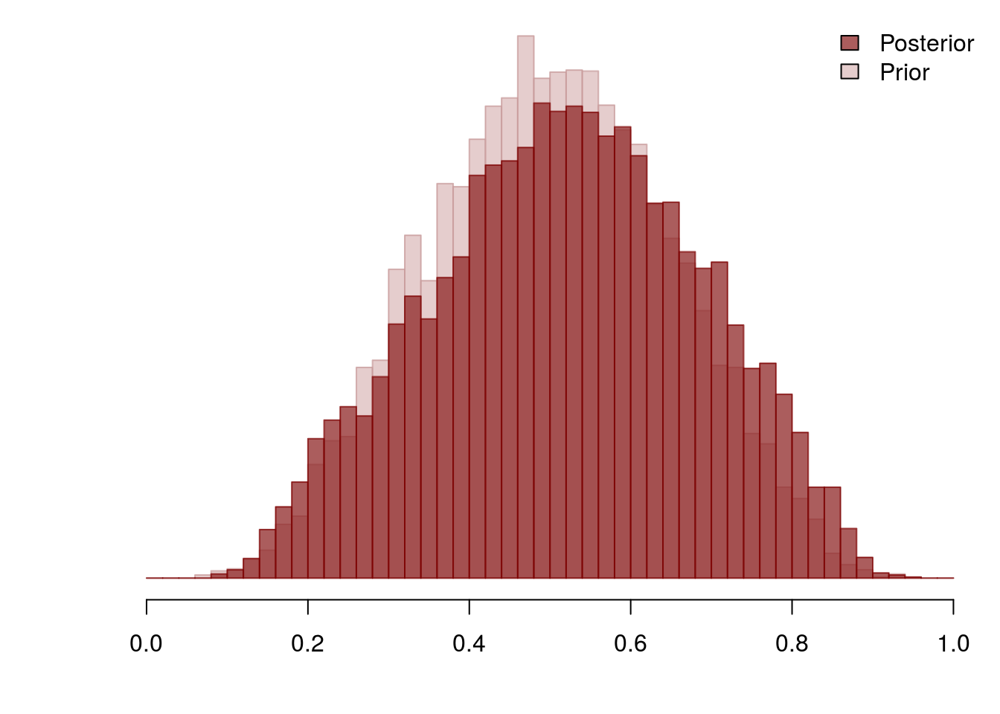
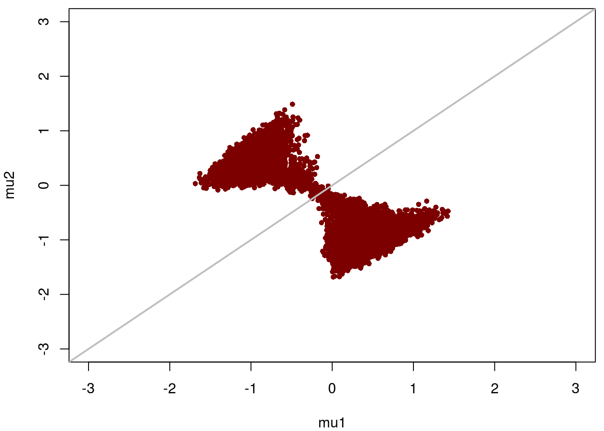

Identifying Bayesian Mixture Models
Michael Betancourt
February 2017
Mixture modeling is a powerful technique for integrating multiple data generating processes into a single model. Unfortunately when those data data generating processes are degenerate the resulting mixture model suffers from inherent combinatorial non-identifiabilities that frustrate accurate computation. Consequently, in order to utilize mixture models reliably in practice we need strong and principled prior information to ameliorate these frustrations.
In this case study I will first introduce how mixture models are implemented in Bayesian inference. I will then discuss the non-identifiability inherent to that construction as well as how the non-identifiability can be tempered with principled prior information. Lastly I will demonstrate how these issues manifest in a simple example, with a final tangent to consider an additional pathology that can arise in Bayesian mixture models.
Mixture Models
In a mixture model we assume that a given measurement, \(y\), can be drawn from one of \(K\) data generating processes, each with their own set of parameters, \(\pi_{k} ( y \mid \alpha_{k} )\). To implement such a model we need to construct the corresponding likelihood and then subsequent posterior distribution.
The Mixture Likelihood
Let \(z \in \{0 ,\ldots, K\}\) be an assignment that indicates to which data generating process our measurement was generated. Conditioned on this assignment, the mixture likelihood is just \[ \pi (y \mid \boldsymbol{\alpha}, z) = \pi_{z} ( y \mid \alpha_{z} ), \] where \(\boldsymbol{\alpha} = (\alpha_1, \ldots, \alpha_K)\).
By combining assignments with a set of data generating processes we admit an extremely expressive class of models that encompass many different inferential and decision problems. For example, if multiple measurements \(y_n\) are given but the corresponding assignments \(z_n\) are unknown then inference over the mixture model is equivalent to clustering the measurements across the component data generating processes. Similarly, if both the measurements and the assignments are given then inference over the mixture model admits classification of future measurements. Finally, semi-supervised learning corresponds to inference over a mixture model where only some of the assignments are known.
In practice discrete assignments are difficult to fit accurately and efficiently, but we can facilitate inference by marginalizing the assignments out of the model entirely. If each component in the mixture occurs with probability \(\theta_k\), \[ \boldsymbol{\theta} = (\theta_1, \ldots, \theta_K), \, 0 \le \theta_{k} \le 1, \, \sum_{k = 1}^{K} \theta_{k} = 1, \] then the assignments follow a multinomial distribution, \[ \pi (z \mid \boldsymbol{\theta} ) = \theta_{z}, \] and the joint likelihood over the measurement and its assignment is given by \[ \pi (y, z \mid \boldsymbol{\alpha}, \boldsymbol{\theta}) = \pi (y \mid \boldsymbol{\alpha}, z) \, \pi (z \mid \boldsymbol{\theta} ) = \pi_{z} ( y \mid \alpha_{z} ) \, \theta_z. \] Marginalizing over all of the possible assignments then gives \[ \begin{align*} \pi (y \mid \boldsymbol{\alpha}, \boldsymbol{\theta}) &= \sum_{z} \pi (y, z \mid \boldsymbol{\alpha}, \boldsymbol{\theta}) \\ &= \sum_{z} \pi_{z} ( y \mid \alpha_{z} ) \, \theta_z \\ &= \sum_{k = 1}^{K} \pi_{k} ( y \mid \alpha_{k} ) \, \theta_k \\ &= \sum_{k = 1}^{K} \theta_k \, \pi_{k} ( y \mid \alpha_{k} ). \end{align*} \] In words, after marginalizing out the assignments the mixture likelihood reduces to a convex combination of the component data generating processes.
Marginalizing out the discrete assignments yields a likelihood that depends on only continuous parameters, making it amenable to state-of-the-art tools like Stan. Moreover, modeling the latent mixture probabilities instead of the discrete assignments admits more precise inferences as a consequence of the Rao-Blackwell theorem. From any perspective the marginalized mixture likelihood is the ideal basis for inference.
Bayesian Mixture Posteriors
In order to perform Bayesian inference over a mixture model we need to complement the mixture likelihood with prior distributions for both the component parameters, \(\boldsymbol{\alpha}\), and the mixture probabilities, \(\boldsymbol{\theta}\). Assuming that these distributions are independent a priori, \[ \pi(\boldsymbol{\alpha}, \boldsymbol{\theta}) = \pi(\boldsymbol{\alpha}) \, \pi(\boldsymbol{\theta}), \] the subsequent posterior for a single measurement takes the form \[ \pi(\boldsymbol{\alpha}, \boldsymbol{\theta} \mid y) \propto \pi(\boldsymbol{\alpha}) \, \pi(\boldsymbol{\theta}) \sum_{k = 1}^{K} \theta_k \, \pi_{k} ( y \mid \alpha_k ). \]
Similarly, the posterior for multiple measurements becomes \[ \pi(\boldsymbol{\alpha}, \boldsymbol{\theta} \mid \mathbf{y}) \propto \pi(\boldsymbol{\alpha}) \, \pi(\boldsymbol{\theta}) \sum_{n = 1}^{N} \sum_{k = 1}^{K} \theta_k \, \pi_{k} ( y_n \mid \alpha_k ). \] Additional measurements, however, do not impact the non-identifiability inherent to mixture models. Consequently we will consider only a single measurement in the proceeding section, returning to multiple measurements in the example.
Degenerate Mixture Models and Non-identifiability
When making inferences with a mixture model we need to learn each of the component weights, \(\theta_k\), and the component parameters, \(\alpha_k\). This introduces a subtle challenge because if the measurement cannot discriminate between the components then it cannot discriminate between the component parameters.
If the individual component distributions \(\pi_{k} (y \mid \alpha_{k})\) are distinct then the unique characteristics of each can be enough to inform the corresponding parameters individually and the mixture model is straightforward to fit. Circumstances become much more dire, however, in the degenerate case when the components are identical, \(\pi_{k} (y \mid \alpha_{k}) = \pi (y \mid \alpha_{k})\). In this case there is a fundamental ambiguity as to which parameters \(\alpha_{k}\) are associated with each component in the mixture.
To see this, let \(\sigma\) denote a permutation of the indices in our mixture, \[ \sigma (1, \ldots, K) \mapsto ( \sigma(1), \ldots, \sigma(K)), \] with \[ \sigma (\boldsymbol{\alpha}) = \sigma( \alpha_1, \ldots, \alpha_K) \mapsto ( \alpha_{\sigma(1)}, \ldots, \alpha_{\sigma(K)}). \] When the component distributions are identical the mixture likelihood is invariant to any permutation of the indices, \[ \begin{align*} \pi(y \mid \sigma(\boldsymbol{\alpha}), \sigma(\boldsymbol{\theta})) &= \sum_{k = 1}^{K} \theta_{\sigma(k)} \, \pi_{\sigma(k)} ( y \mid \alpha_{\sigma(k)} ) \\ &= \sum_{k' = 1}^{K} \theta_{k'} \, \pi_{k'} ( y \mid \alpha_{k'} ) \\ &= \pi(y \mid \boldsymbol{\alpha}, \boldsymbol{\theta}). \end{align*} \]
Moreover, when the priors are exchangeable, \(\pi (\sigma(\boldsymbol{\alpha})) = \pi(\boldsymbol{\alpha})\) and \(\pi (\sigma(\boldsymbol{\theta})) = \pi(\boldsymbol{\theta})\), then the posterior will inherit the permutation invariance of the mixture likelihood, \[ \begin{align*} \pi(\sigma(\boldsymbol{\alpha}), \sigma(\boldsymbol{\theta}) \mid y) &\propto \pi(\sigma(\boldsymbol{\alpha})) \, \pi(\sigma(\boldsymbol{\theta})) \sum_{k = 1}^{K} \theta_{\sigma(k)} \, \pi_{\sigma(k)} ( y \mid \alpha_{\sigma(k)} ) \\ &\propto \pi(\sigma(\boldsymbol{\alpha})) \, \pi(\sigma(\boldsymbol{\theta})) \sum_{k' = 1}^{K} \theta_{k'} \, \pi_{k'} ( y \mid \alpha_{k'} ) \\ &\propto \pi(\boldsymbol{\alpha}) \, \pi(\boldsymbol{\theta}) \sum_{k' = 1}^{K} \theta_{k'} \, \pi_{k'} ( y \mid \alpha_{k'} ) \\ &= \pi(\boldsymbol{\alpha}, \boldsymbol{\theta} \mid y). \end{align*} \] In this case all of our inferences will be the same regardless of how we label the mixture components with explicit indices.
Because of this labeling degeneracy the posterior distribution will be non-identified. In particular, it will manifest multimodality, with one mode for each of the possible labelings. For a mixture with \(K\) identical components there are \(K!\) possible labelings and hence any degenerate mixture model will exhibit at least \(K!\) modes.
Hence even for a relatively small number of components the posterior distribution will have too many modes for any statistical algorithm to accurately quantify unless the modes collapse into each other. For example, if we applied Markov chain Monte Carlo then any chain would be able to explore one of the modes but it would not be able to transition between the modes, at least not within in any finite running time.
Identifying Degenerate Bayesian Mixture Models
Even if we had a statistical algorithm that could transition between the degenerate modes and explore the entire mixture posterior, typically there will be too many modes to complete that exploration in any reasonable time. Consequently if we want to accurately fit these models in practice then we need to break the labeling degeneracy and remove the extreme multimodality altogether.
Exactly how we break the labeling degeneracy depends on what prior information we can exploit. In particular, our strategy will be different depending on whether our prior information is exchangeable or not.
Identification with Non-exchangeable Prior Information
Because the posterior distribution inherits the permutation-invariance of the mixture likelihood only if the priors are exchangeable, one way to immediately obstruct the labeling degeneracy of the mixture posterior is to employ non-exchangeable priors. This approach is especially useful when each component of the likelihood is meant to be responsible for a specific purpose, for example when each component models a known subpopulations with distinct behaviors about which we have prior information. If this principled prior information is strong enough then the prior can suppress all but the one labeling consistent with these responsibilities, ensuring a unimodal mixture posterior distribution.
Identification with Exchangeable Prior Information
When our prior information is exchangeable there is nothing preventing the mixture posterior from becoming multimodal and impractical to fit. When our inferences are also exchangeable, however, we can exploit the symmetry of the labeling degeneracies to simplify the computational problem dramatically.
In this section we’ll study the symmetric geometry induced by labeling degeneracies and show how that symmetry can be used to reduce the multimodal mixture posterior into a unimodal distribution that yields exactly the same inferences while being far easier to fit.
The Geometry of a Degenerate Posterior
Each labeling is characterized by the unique assignment of indices to the components in our mixture. Permuting the indices yields a new assignment and hence a new labeling of our mixture model. Consequently a natural way to identify each labeling is to a choose a standard set of indices, \(\alpha_1, \ldots, \alpha_K\), and distinguish each labeling by the permutation that maps to the appropriate indices, \(\alpha_{\sigma(1)}, \ldots, \alpha_{\sigma(K)}\). The standard indices themselves identify a labeling with the trivial permutation that leaves the indices unchanged.
In general it is difficult to utilize these permutations, but if the component parameters, \(\alpha_n\), are scalar then we can exploit their unique ordering to readily identify permutations and hence labelings. For example, if we choose the standard labeling to be the one where the parameter values are ordered, \(\alpha_1 \le \ldots \le \alpha_K\), then any permutation will yield a new ordering of the parameters, \(\alpha_{\sigma(1)} \le \ldots \le \alpha_{\sigma(K)}\), which then identifies another labeling. In other words, we can identify the each labeling by the ordering the parameter values.
This identification also has a welcome geometric interpretation. The region of parameter space satisfying a given ordering constraint, such as \(\alpha_1 \le \ldots \le \alpha_K\), defines a square pyramid with the apex point at zero. The \(K\)-dimensional parameter space neatly decomposes into \(K!\) of these pyramids, each with a distinct ordering and hence association with a unique labeling.
When the priors are exchangeable the mixture posterior aliases across each of these pyramids in parameter space: if we were given the mixture posterior restricted to one of these pyramids then we could reconstruct the entire mixture distribution by simply rotating that restricted distribution into each of the other \(K! - 1\) pyramids. As we do this we also map the mode in the restricted distribution into each pyramid, creating exactly the expected \(K!\) multimodality. Moreover, those rotations are exactly given by permuting the parameter indices and reordering the corresponding parameter values.
Exchangeable Inferences and Ordering Constraints
From a Bayesian perspective, all well-defined inferences are given by expectations of certain functions with respect to our posterior distribution.
Hence if we want to limit ourselves to only those inferences insensitive to the labeling then we have to considering expectations only of those functions that are permutation invariant, \(f(\sigma(\boldsymbol{\alpha})) = f(\boldsymbol{\alpha})\).
Importantly, under this class of functions the symmetry of the degenerate mixture posterior carries over to the expectation values themselves: the expectation taken over each pyramid will yield exactly the same value.
Consequently we should be able to avoid the combinatorial cost of fitting the full mixture model by simply restricting our exploration to a single ordering of the parameters.
Imposing an ordering on parameter space can be taken as a a computational trick, but it can also be interpreted as method of making an exchangeable prior non-exchangeable without affecting the resulting inferences. Given the exchangeable prior \(\pi (\boldsymbol{\alpha})\) we define the non-exchangeable prior \[ \pi' (\boldsymbol{\alpha}) = \left\{ \begin{array}{ll} \pi (\boldsymbol{\alpha}), & \alpha_1 \le \ldots \le \alpha_K \\ 0, & \mathrm{else} \end{array} \right. , \] which limits the mixture posterior, and hence any expectations, to a single ordering. From this perspective all of our strategies for breaking the labeling degeneracy reduce to imposing a non-exchangeable prior.
In this section I will formalize the utility of ordering by proving that the resulting inferences are indeed correct. In order to outline the proof we will first consider a two-component mixture before moving onto the general case.
Two-Component Case
In the two-component case we have two parameters, \(\alpha_1\) and \(\alpha_2\), and two mixture weights, \(\theta_1\) and \(\theta_2 = 1 - \theta_1\).
We begin with the desired expectation and decompose it over the two pyramids that arise in the two-dimensional parameter space, \[ \begin{align*} \mathbb{E}_{\pi} [ f ] &= \int \mathrm{d} \theta_1 \mathrm{d} \theta_2 \mathrm{d} \alpha_1 \mathrm{d} \alpha_2 \cdot f (\alpha_1, \alpha_2) \cdot \pi (\alpha_1 ,\alpha_2, \theta_1 ,\theta_2 \mid y) \\ &\propto \int \mathrm{d} \theta_1 \mathrm{d} \theta_2 \mathrm{d} \alpha_1 \mathrm{d} \alpha_2 \cdot f (\alpha_1, \alpha_2) \cdot \pi (\alpha_1 ,\alpha_2) \, \pi (\theta_1 ,\theta_2) \, ( \theta_1 \pi (y \mid \alpha_1) + \theta_2 \pi (y \mid \alpha_2) ) \\ &\propto \quad \int_{\alpha_1 < \alpha_2} \mathrm{d} \theta_1 \mathrm{d} \theta_2 \mathrm{d} \alpha_1 \mathrm{d} \alpha_2 \cdot f (\alpha_1, \alpha_2) \cdot \pi (\alpha_1 ,\alpha_2) \, \pi (\theta_1 ,\theta_2) \, ( \theta_1 \pi (y \mid \alpha_1) + \theta_2 \pi (y \mid \alpha_2) ) \\ &\quad + \int_{\alpha_2 < \alpha_1} \mathrm{d} \theta_1 \mathrm{d} \theta_2 \mathrm{d} \alpha_1 \mathrm{d} \alpha_2 \cdot f (\alpha_1, \alpha_2) \cdot \pi (\alpha_1 ,\alpha_2) \, \pi (\theta_1 ,\theta_2) \, ( \theta_1 \pi (y \mid \alpha_1) + \theta_2 \pi (y \mid \alpha_2) ). \end{align*} \]
We want to manipulate the second term into something that looks like the first, which we can accomplish with a permutation of the parameters, \((\alpha_1, \alpha_2) \rightarrow (\beta_2, \beta_1)\) and \((\theta_1, \theta_2) \rightarrow (\lambda_2, \lambda_1)\), that rotates the second pyramid into the first. This gives \[ \begin{align*} \mathbb{E}_{\pi} [ f ] &\propto \quad \int_{\alpha_1 < \alpha_2} \mathrm{d} \theta_1 \mathrm{d} \theta_2 \mathrm{d} \alpha_1 \mathrm{d} \alpha_2 \cdot f (\alpha_1, \alpha_2) \cdot \pi (\alpha_1 ,\alpha_2) \, \pi (\theta_1 ,\theta_2) \, ( \theta_1 \pi (y \mid \alpha_1) + \theta_2 \pi (y \mid \alpha_2) ) \\ &\quad + \int_{\beta_1 < \beta_2} \mathrm{d} \lambda_2 \mathrm{d} \lambda_1 \mathrm{d} \beta_2 \mathrm{d} \beta_1 \cdot f (\beta_2, \beta_1) \cdot \pi (\beta_2, \beta_1) \, \pi (\lambda_2 ,\lambda_1) \, ( \lambda_2 \pi (y \mid \beta_2) + \lambda_1 \pi (y \mid \beta_1) ) \\ &\propto \quad \int_{\alpha_1 < \alpha_2} \mathrm{d} \theta_1 \mathrm{d} \theta_2 \mathrm{d} \alpha_1 \mathrm{d} \alpha_2 \cdot f (\alpha_1, \alpha_2) \cdot \pi (\alpha_1 ,\alpha_2) \, \pi (\theta_1 ,\theta_2) \, ( \theta_1 \pi (y \mid \alpha_1) + \theta_2 \pi (y \mid \alpha_2) ) \\ &\quad + \int_{\beta_1 < \beta_2} \mathrm{d} \lambda_1 \mathrm{d} \lambda_2 \mathrm{d} \beta_1 \mathrm{d} \beta_2 \cdot f (\beta_2, \beta_1) \cdot \pi (\beta_2, \beta_1) \, \pi (\lambda_2 ,\lambda_1) \, ( \lambda_1 \pi (y \mid \beta_1) + \lambda_2 \pi (y \mid \beta_2) ). \end{align*} \]
Now we exploit the permutation-invariance of \(f\) and the exchangeability of the priors to massage the second term to be equivalent to the first, \[ \begin{align*} \mathbb{E}_{\pi} [ f ] &\propto \quad \int_{\alpha_1 < \alpha_2} \mathrm{d} \theta_1 \mathrm{d} \theta_2 \mathrm{d} \alpha_1 \mathrm{d} \alpha_2 \cdot f (\alpha_1, \alpha_2) \cdot \pi (\alpha_1 ,\alpha_2) \, \pi (\theta_1 ,\theta_2) \, ( \theta_1 \pi (y \mid \alpha_1) + \theta_2 \pi (y \mid \alpha_2) ) \\ &\quad + \int_{\beta_1 < \beta_2} \mathrm{d} \lambda_1 \mathrm{d} \lambda_2 \mathrm{d} \beta_1 \mathrm{d} \beta_2 \cdot f (\beta_1, \beta_2) \cdot \pi (\beta_1, \beta_2) \, \pi (\lambda_1 ,\lambda_2) \, ( \lambda_1 \pi (y \mid \beta_1) + \lambda_2 \pi (y \mid \beta_2) ) \\ &\propto 2 \int_{\alpha_1 < \alpha_2} \mathrm{d} \theta_1 \mathrm{d} \theta_2 \mathrm{d} \alpha_1 \mathrm{d} \alpha_2 \cdot f (\alpha_1, \alpha_2) \cdot \pi (\alpha_1 ,\alpha_2) \, \pi (\theta_1 ,\theta_2) \, ( \theta_1 \pi (y \mid \alpha_1) + \theta_2 \pi (y \mid \alpha_2) ) \\ &\propto \int_{\alpha_1 < \alpha_2} \mathrm{d} \theta_1 \mathrm{d} \theta_2 \mathrm{d} \alpha_1 \mathrm{d} \alpha_2 \cdot f (\alpha_1, \alpha_2) \cdot 2 \pi (\alpha_1 ,\alpha_2) \, \pi (\theta_1 ,\theta_2) \, 2 ( \theta_1 \pi (y \mid \alpha_1) + \theta_2 \pi (y \mid \alpha_2) ) \\ &= \int_{\alpha_1 < \alpha_2} \mathrm{d} \theta_1 \mathrm{d} \theta_2 \mathrm{d} \alpha_1 \mathrm{d} \alpha_2 \cdot f (\alpha_1, \alpha_2) \cdot \pi' (\alpha_1, \alpha_2, \theta_1, \theta_2 \mid y). \end{align*} \]
\(\pi' (\alpha_1, \alpha_2, \theta_1, \theta_2)\), however, is exactly the mixture posterior density restricted to the pyramid defined by the standard ordering, so we finally have \[ \mathbb{E}_{\pi} [ f ] = \mathbb{E}_{\pi'} [ f ]. \] In words, taking an expectation over the pyramid defined by the standard ordering yields the same value as the expectation taken over the entire parameter space. Only the distribution over that one pyramid is no longer multimodal!
General Case
The general case follows almost exactly once we use permutations of the standard ordering to identify each pyramid of the \(K!\) pyramids. Writing \(\Sigma'\) as the set of all \(K! - 1\) label permutations except for the trivial permutation, the desired expectation decomposes as \[ \begin{align*} \mathbb{E}_{\pi} [ f ] &= \int \prod_{k = 1}^{K} \mathrm{d} \theta_k \mathrm{d} \alpha_k \cdot f (\boldsymbol{\alpha}) \cdot \pi (\boldsymbol{\alpha}, \boldsymbol{\theta} \mid y) \\ &\propto \int \prod_{k = 1}^{K} \mathrm{d} \theta_k \mathrm{d} \alpha_k \cdot f (\boldsymbol{\alpha}) \cdot \pi (\boldsymbol{\alpha}) \, \pi(\boldsymbol{\theta}) \, \sum_{k = 1}^{K} \theta_k \, \pi (y \mid \alpha_k) \\ &\propto \quad \int_{\alpha_1 < \ldots < \alpha_K} \prod_{k = 1}^{K} \mathrm{d} \theta_k \mathrm{d} \alpha_k \cdot f (\boldsymbol{\alpha}) \cdot \pi (\boldsymbol{\alpha}) \, \pi(\boldsymbol{\theta}) \, \sum_{k = 1}^{K} \theta_k \, \pi (y \mid \alpha_k) \\ &\quad + \sum_{\sigma \in \Sigma'} \int_{\alpha_{\sigma(1)} < \ldots < \alpha_{\sigma(K)}} \prod_{k = 1}^{K} \mathrm{d} \theta_k \mathrm{d} \alpha_k \cdot f (\boldsymbol{\alpha}) \cdot \pi (\boldsymbol{\alpha}) \, \pi(\boldsymbol{\theta}) \, \sum_{k = 1}^{K} \theta_k \, \pi (y \mid \alpha_k). \end{align*} \]
In the permuted terms we apply the transformations \[ \sigma( \boldsymbol{\alpha} ) \mapsto \boldsymbol{\beta}, \, \sigma( \boldsymbol{\theta} ) \mapsto \boldsymbol{\lambda} \] to give \[ \begin{align*} \mathbb{E}_{\pi} [ f ] &\propto \quad \int_{\alpha_1 < \ldots < \alpha_K} \prod_{k = 1}^{K} \mathrm{d} \theta_k \mathrm{d} \alpha_k \cdot f (\boldsymbol{\alpha}) \cdot \pi (\boldsymbol{\alpha}) \, \pi(\boldsymbol{\theta}) \, \sum_{k = 1}^{K} \theta_k \, \pi (y \mid \alpha_k) \\ &\quad + \sum_{\sigma \in \Sigma'} \int_{\beta_1 < \ldots < \beta_K} \prod_{k = 1}^{K} \mathrm{d} \lambda_{\sigma^{-1}(k)} \mathrm{d} \beta_{\sigma^{-1}(k)} \cdot f ( \sigma^{-1}(\boldsymbol{\beta}) ) \cdot \pi ( \sigma^{-1}(\boldsymbol{\beta}) ) \, \pi ( \sigma^{-1}(\boldsymbol{\lambda}) ) \, \sum_{k = 1}^{K} \lambda_{\sigma^{-1}(k)} \, \pi (y \mid \beta_{\sigma^{-1}(k)}) \\ &\propto \quad \int_{\alpha_1 < \ldots < \alpha_K} \prod_{k = 1}^{K} \mathrm{d} \theta_k \mathrm{d} \alpha_k \cdot f (\boldsymbol{\alpha}) \cdot \pi (\boldsymbol{\alpha}) \, \pi(\boldsymbol{\theta}) \, \sum_{k = 1}^{K} \theta_k \, \pi (y \mid \alpha_k) \\ &\quad + \sum_{\sigma \in \Sigma'} \int_{\beta_1 < \ldots < \beta_K} \prod_{k' = 1}^{K} \mathrm{d} \lambda_{k'} \mathrm{d} \beta_{k'} \cdot f ( \sigma^{-1}(\boldsymbol{\beta}) ) \cdot \pi ( \sigma^{-1}(\boldsymbol{\beta}) ) \, \pi ( \sigma^{-1}(\boldsymbol{\lambda}) ) \, \sum_{k' = 1}^{K} \lambda_{k'} \, \pi (y \mid \beta_{k'}). \end{align*} \] We now exploit the permutation-invariance of \(f\) and the exchangeability of the priors to give \[ \begin{align*} \mathbb{E}_{\pi} [ f ] &\propto \quad \int_{\alpha_1 < \ldots < \alpha_K} \prod_{k = 1}^{K} \mathrm{d} \theta_k \mathrm{d} \alpha_k \cdot f (\boldsymbol{\alpha}) \cdot \pi (\boldsymbol{\alpha}) \, \pi(\boldsymbol{\theta}) \, \sum_{k = 1}^{K} \theta_k \, \pi (y \mid \alpha_k) \\ &\quad + \sum_{\sigma \in \Sigma'} \int_{\beta_1 < \ldots < \beta_K} \prod_{k' = 1}^{K} \mathrm{d} \lambda_{k'} \mathrm{d} \beta_{k'} \cdot f ( \boldsymbol{\beta} ) \cdot \pi ( \boldsymbol{\beta} ) \, \pi ( \boldsymbol{\lambda} ) \, \sum_{k' = 1}^{K} \lambda_{k'} \, \pi (y \mid \beta_{k'}) \\ &\propto K! \int_{\alpha_1 < \ldots < \alpha_K} \prod_{k = 1}^{K} \mathrm{d} \theta_k \mathrm{d} \alpha_k \cdot f (\boldsymbol{\alpha}) \cdot \pi (\boldsymbol{\alpha}) \, \pi(\boldsymbol{\theta}) \, \sum_{k = 1}^{K} \theta_k \, \pi (y \mid \alpha_k) \\ &\propto \int_{\alpha_1 < \ldots < \alpha_K} \prod_{k = 1}^{K} \mathrm{d} \theta_k \mathrm{d} \alpha_k \cdot f (\boldsymbol{\alpha}) \cdot K! \, \pi (\boldsymbol{\alpha}) \, \pi(\boldsymbol{\theta}) \, \sum_{k = 1}^{K} \theta_k \, \pi (y \mid \alpha_k) \\ &= \int_{\alpha_1 < \ldots < \alpha_N} \prod_{n = 1}^{K} \mathrm{d} \theta_n \mathrm{d} \alpha_n \cdot f (\boldsymbol{\alpha}) \cdot \pi' (\boldsymbol{\alpha}, \boldsymbol{\theta} \mid y). \end{align*} \]
Once again \[ \pi' (\boldsymbol{\alpha}, \boldsymbol{\theta} \mid y) \propto K! \, \pi (\boldsymbol{\alpha}) \, \pi(\boldsymbol{\theta}) \, \sum_{k = 1}^{K} \theta_k \, \pi (y \mid \alpha_k) \] is exactly the mixture posterior density confined to the pyramid given by the standard ordering. Consequently, in general we can exactly recover the desired expectation by integrating over only the region of parameter space satisfying the chosen ordering constraint.
While the ordering is limited to scalar parameters, it can still prove useful when the component distributions are multivariate. Although we cannot order the multivariate parameters themselves, ordering any one of the parameters is sufficient to break the labeling degeneracy for the entire mixture.
A Bayesian Mixture Model Example
To illustrate the pathologies of Bayesian mixture models, and their potential resolutions, let’s consider a relatively simple example where the likelihood is given by a mixture of two Gaussians, \[ \pi(y_1, \ldots, y_N \mid \mu_1, \sigma_1, \mu_2, \sigma_2, \theta_1, \theta_2) = \sum_{n = 1}^{N} \theta_1 \mathcal{N} (y_n \mid \mu_1, \sigma_1) + \theta_2 \mathcal{N} (y_n \mid \mu_2, \sigma_2). \] Note that the mixture is applied to each datum individually – our model assumes that each measurement is drawn from one of the components independently as opposed to the entire dataset being drawn from one of the components as a whole.
We first define the component data generating processes to be well-separated relative to their standard deviations,
mu <- c(-2.75, 2.75);
sigma <- c(1, 1);
lambda <- 0.4Then we simulate some data from the mixture likelihood by following its generative structure, first drawing assignments for each measurement and then drawing the measurements themselves from the corresponding Gaussian,
set.seed(689934)
N <- 1000
z <- rbinom(N, 1, lambda) + 1;
y <- rnorm(N, mu[z], sigma[z]);library(rstan)
rstan_options(auto_write = TRUE)
stan_rdump(c("N", "y"), file="mix.data.R")Let’s now consider a Bayesian fit of this model, first with labeling degeneracies and then with various attempted resolutions.
A Degenerate Implementation
As discussed above, in order to ensure that the labeling degeneracies persist in the posterior distribution we need exchangeable priors. We can, for example, accomplish this by assigning the identical priors to the Gaussian parameters, \[ \mu_1, \mu_2 \sim \mathcal{N} (0, 2), \, \sigma_1, \sigma_2 \sim \text{Half-}\mathcal{N} (0, 2), \] and a symmetric Beta distribution to the mixture weight, \[ \theta_1 \sim \text{Beta} (5, 5). \]
writeLines(readLines("gauss_mix.stan"))data {
int<lower = 0> N;
vector[N] y;
}
parameters {
vector[2] mu;
real<lower=0> sigma[2];
real<lower=0, upper=1> theta;
}
model {
sigma ~ normal(0, 2);
mu ~ normal(0, 2);
theta ~ beta(5, 5);
for (n in 1:N)
target += log_mix(theta,
normal_lpdf(y[n] | mu[1], sigma[1]),
normal_lpdf(y[n] | mu[2], sigma[2]));
}Equivalently we could also have defined \(\theta\) as a two-dimensional simplex with a \(\text{Dirichlet}(5, 5)\) prior which would yield the same exact model.
Aware of the labeling degeneracy, let’s go ahead and fit this Bayesian mixture model in Stan,
input_data <- read_rdump("mix.data.R")
degenerate_fit <- stan(file='gauss_mix.stan', data=input_data,
chains=4, seed=483892929, refresh=2000)
SAMPLING FOR MODEL 'gauss_mix' NOW (CHAIN 1).
Chain 1, Iteration: 1 / 2000 [ 0%] (Warmup)
Chain 1, Iteration: 1001 / 2000 [ 50%] (Sampling)
Chain 1, Iteration: 2000 / 2000 [100%] (Sampling)
Elapsed Time: 1.38577 seconds (Warm-up)
0.973725 seconds (Sampling)
2.3595 seconds (Total)
SAMPLING FOR MODEL 'gauss_mix' NOW (CHAIN 2).
Chain 2, Iteration: 1 / 2000 [ 0%] (Warmup)
Chain 2, Iteration: 1001 / 2000 [ 50%] (Sampling)
Chain 2, Iteration: 2000 / 2000 [100%] (Sampling)
Elapsed Time: 1.30787 seconds (Warm-up)
0.909254 seconds (Sampling)
2.21712 seconds (Total)
SAMPLING FOR MODEL 'gauss_mix' NOW (CHAIN 3).
Chain 3, Iteration: 1 / 2000 [ 0%] (Warmup)
Chain 3, Iteration: 1001 / 2000 [ 50%] (Sampling)
Chain 3, Iteration: 2000 / 2000 [100%] (Sampling)
Elapsed Time: 1.33762 seconds (Warm-up)
1.2385 seconds (Sampling)
2.57612 seconds (Total)
SAMPLING FOR MODEL 'gauss_mix' NOW (CHAIN 4).
Chain 4, Iteration: 1 / 2000 [ 0%] (Warmup)
Chain 4, Iteration: 1001 / 2000 [ 50%] (Sampling)
Chain 4, Iteration: 2000 / 2000 [100%] (Sampling)
Elapsed Time: 1.43549 seconds (Warm-up)
0.895336 seconds (Sampling)
2.33083 seconds (Total)The split Rhat is atrocious, indicating that the chains are not exploring the same regions of parameter space.
print(degenerate_fit)Inference for Stan model: gauss_mix.
4 chains, each with iter=2000; warmup=1000; thin=1;
post-warmup draws per chain=1000, total post-warmup draws=4000.
mean se_mean sd 2.5% 25% 50% 75%
mu[1] -1.33 1.72 2.43 -2.81 -2.75 -2.72 -1.26
mu[2] 1.47 1.72 2.43 -2.79 1.36 2.85 2.89
sigma[1] 1.03 0.00 0.03 0.96 1.00 1.03 1.05
sigma[2] 1.02 0.00 0.04 0.95 1.00 1.02 1.05
theta 0.56 0.07 0.11 0.36 0.53 0.62 0.63
lp__ -2108.57 0.03 1.55 -2112.46 -2109.43 -2108.28 -2107.43
97.5% n_eff Rhat
mu[1] 2.94 2 56.48
mu[2] 2.96 2 51.11
sigma[1] 1.09 4000 1.00
sigma[2] 1.10 4000 1.00
theta 0.65 2 7.52
lp__ -2106.51 2050 1.00
Samples were drawn using NUTS(diag_e) at Thu Mar 2 15:36:24 2017.
For each parameter, n_eff is a crude measure of effective sample size,
and Rhat is the potential scale reduction factor on split chains (at
convergence, Rhat=1).Indeed this is to be expected as the individual chains find and then explore one of the two degenerate modes independently of the others,
c_light_trans <- c("#DCBCBCBF")
c_light_highlight_trans <- c("#C79999BF")
c_mid_trans <- c("#B97C7CBF")
c_mid_highlight_trans <- c("#A25050BF")
c_dark_trans <- c("#8F2727BF")
c_dark_highlight_trans <- c("#7C0000BF")params1 <- as.data.frame(extract(degenerate_fit, permuted=FALSE)[,1,])
params2 <- as.data.frame(extract(degenerate_fit, permuted=FALSE)[,2,])
params3 <- as.data.frame(extract(degenerate_fit, permuted=FALSE)[,3,])
params4 <- as.data.frame(extract(degenerate_fit, permuted=FALSE)[,4,])
par(mar = c(4, 4, 0.5, 0.5))
plot(params1$"mu[1]", params1$"mu[2]", col=c_dark_highlight_trans, pch=16, cex=0.8,
xlab="mu1", xlim=c(-3, 3), ylab="mu2", ylim=c(-3, 3))
points(params2$"mu[1]", params2$"mu[2]", col=c_dark_trans, pch=16, cex=0.8)
points(params3$"mu[1]", params3$"mu[2]", col=c_mid_highlight_trans, pch=16, cex=0.8)
points(params4$"mu[1]", params4$"mu[2]", col=c_mid_trans, pch=16, cex=0.8)
lines(0.08*(1:100) - 4, 0.08*(1:100) - 4, col="grey", lw=2)
legend("topright", c("Chain 1", "Chain 2", "Chain 3", "Chain 4"),
fill=c(c_dark_highlight_trans, c_dark_trans,
c_mid_highlight_trans, c_mid_trans), box.lty=0, inset=0.0005)
This degenerate example is a particularly nice demonstration of the importance of running multiple chains in any MCMC analysis. If we had run just one chain then we would have had no indication of the multimodality in our the posterior and the incompleteness of our fits!
Breaking the Labeling Degeneracy with Non-exchangeable Priors
Our first potential resolution of the labeling degeneracy is to tweak the priors to no longer be exchangeable. With no reason to expect that the standard deviations will vary between the two components, we will instead adjust the priors for the means to strongly favor \(\mu_1\) positive and \(\mu_2\) negative,
writeLines(readLines("gauss_mix_asym_prior.stan"))data {
int<lower = 0> N;
vector[N] y;
}
parameters {
vector[2] mu;
real<lower=0> sigma[2];
real<lower=0, upper=1> theta;
}
model {
sigma ~ normal(0, 2);
mu[1] ~ normal(4, 0.5);
mu[2] ~ normal(-4, 0.5);
theta ~ beta(5, 5);
for (n in 1:N)
target += log_mix(theta,
normal_lpdf(y[n] | mu[1], sigma[1]),
normal_lpdf(y[n] | mu[2], sigma[2]));
}Running in Stan
asym_fit <- stan(file='gauss_mix_asym_prior.stan', data=input_data,
chains=4, seed=483892929, refresh=2000)
SAMPLING FOR MODEL 'gauss_mix_asym_prior' NOW (CHAIN 1).
Chain 1, Iteration: 1 / 2000 [ 0%] (Warmup)
Chain 1, Iteration: 1001 / 2000 [ 50%] (Sampling)
Chain 1, Iteration: 2000 / 2000 [100%] (Sampling)
Elapsed Time: 1.32051 seconds (Warm-up)
0.892697 seconds (Sampling)
2.21321 seconds (Total)
SAMPLING FOR MODEL 'gauss_mix_asym_prior' NOW (CHAIN 2).
Chain 2, Iteration: 1 / 2000 [ 0%] (Warmup)
Chain 2, Iteration: 1001 / 2000 [ 50%] (Sampling)
Chain 2, Iteration: 2000 / 2000 [100%] (Sampling)
Elapsed Time: 1.37814 seconds (Warm-up)
1.60082 seconds (Sampling)
2.97896 seconds (Total)
SAMPLING FOR MODEL 'gauss_mix_asym_prior' NOW (CHAIN 3).
Chain 3, Iteration: 1 / 2000 [ 0%] (Warmup)
Chain 3, Iteration: 1001 / 2000 [ 50%] (Sampling)
Chain 3, Iteration: 2000 / 2000 [100%] (Sampling)
Elapsed Time: 1.34297 seconds (Warm-up)
0.927972 seconds (Sampling)
2.27095 seconds (Total)
SAMPLING FOR MODEL 'gauss_mix_asym_prior' NOW (CHAIN 4).
Chain 4, Iteration: 1 / 2000 [ 0%] (Warmup)
Chain 4, Iteration: 1001 / 2000 [ 50%] (Sampling)
Chain 4, Iteration: 2000 / 2000 [100%] (Sampling)
Elapsed Time: 1.40858 seconds (Warm-up)
0.901724 seconds (Sampling)
2.3103 seconds (Total)we see that split Rhat still looks terrible,
print(asym_fit)Inference for Stan model: gauss_mix_asym_prior.
4 chains, each with iter=2000; warmup=1000; thin=1;
post-warmup draws per chain=1000, total post-warmup draws=4000.
mean se_mean sd 2.5% 25% 50% 75%
mu[1] 1.49 1.71 2.42 -2.75 1.39 2.86 2.91
mu[2] -1.36 1.69 2.40 -2.82 -2.76 -2.72 -1.29
sigma[1] 1.02 0.00 0.04 0.95 1.00 1.02 1.05
sigma[2] 1.03 0.00 0.03 0.97 1.01 1.03 1.05
theta 0.44 0.07 0.11 0.35 0.37 0.39 0.47
lp__ -2156.80 54.45 77.03 -2292.21 -2163.47 -2112.71 -2111.44
97.5% n_eff Rhat
mu[1] 2.98 2 49.94
mu[2] 2.86 2 57.85
sigma[1] 1.10 4000 1.00
sigma[2] 1.10 4000 1.00
theta 0.64 2 7.29
lp__ -2110.31 2 51.79
Samples were drawn using NUTS(diag_e) at Thu Mar 2 15:36:35 2017.
For each parameter, n_eff is a crude measure of effective sample size,
and Rhat is the potential scale reduction factor on split chains (at
convergence, Rhat=1).Investigating the fit output we see that despite our strong, asymmetric prior the posterior distribution is still multimodal and the disfavored mode is still capturing chains,
params1 <- as.data.frame(extract(asym_fit, permuted=FALSE)[,1,])
params2 <- as.data.frame(extract(asym_fit, permuted=FALSE)[,2,])
params3 <- as.data.frame(extract(asym_fit, permuted=FALSE)[,3,])
params4 <- as.data.frame(extract(asym_fit, permuted=FALSE)[,4,])
par(mar = c(4, 4, 0.5, 0.5))
plot(params1$"mu[1]", params1$"mu[2]", col=c_dark_highlight_trans, pch=16, cex=0.8,
xlab="mu1", xlim=c(-3, 3), ylab="mu2", ylim=c(-3, 3))
points(params2$"mu[1]", params2$"mu[2]", col=c_dark_trans, pch=16, cex=0.8)
points(params3$"mu[1]", params3$"mu[2]", col=c_mid_highlight_trans, pch=16, cex=0.8)
points(params4$"mu[1]", params4$"mu[2]", col=c_mid_trans, pch=16, cex=0.8)
lines(0.08*(1:100) - 4, 0.08*(1:100) - 4, col="grey", lw=2)
legend("topright", c("Chain 1", "Chain 2", "Chain 3", "Chain 4"),
fill=c(c_dark_highlight_trans, c_dark_trans,
c_mid_highlight_trans, c_mid_trans), box.lty=0, inset=0.0005)This example clearly demonstrates the subtle challenge of trying to resolve labeling degeneracy with most non-exchangeable prior distributions. When there are many data the mixture likelihood will be very informative and it can easily overwhelm even strong prior information. The posterior will no longer be symmetric between the degenerate modes, but the disfavored modes will still have sufficiently significant posterior mass to require exploration in the fit.
Reducing the amount data, however, reduces the influence of the likelihood and makes it easier to corral the mixture components in principled directions. With a smaller data set,
N <- 100
z <- rbinom(N, 1, lambda) + 1;
y <- rnorm(N, mu[z], sigma[z]);
stan_rdump(c("N", "y"), file="mix_low.data.R")
input_low_data <- read_rdump("mix_low.data.R")
asym_fit <- stan(file='gauss_mix_asym_prior.stan', data=input_low_data,
chains=4, seed=483892929, refresh=2000)
SAMPLING FOR MODEL 'gauss_mix_asym_prior' NOW (CHAIN 1).
Chain 1, Iteration: 1 / 2000 [ 0%] (Warmup)
Chain 1, Iteration: 1001 / 2000 [ 50%] (Sampling)
Chain 1, Iteration: 2000 / 2000 [100%] (Sampling)
Elapsed Time: 0.163203 seconds (Warm-up)
0.256404 seconds (Sampling)
0.419607 seconds (Total)
SAMPLING FOR MODEL 'gauss_mix_asym_prior' NOW (CHAIN 2).
Chain 2, Iteration: 1 / 2000 [ 0%] (Warmup)
Chain 2, Iteration: 1001 / 2000 [ 50%] (Sampling)
Chain 2, Iteration: 2000 / 2000 [100%] (Sampling)
Elapsed Time: 0.161927 seconds (Warm-up)
0.107424 seconds (Sampling)
0.269351 seconds (Total)
SAMPLING FOR MODEL 'gauss_mix_asym_prior' NOW (CHAIN 3).
Chain 3, Iteration: 1 / 2000 [ 0%] (Warmup)
Chain 3, Iteration: 1001 / 2000 [ 50%] (Sampling)
Chain 3, Iteration: 2000 / 2000 [100%] (Sampling)
Elapsed Time: 0.163485 seconds (Warm-up)
0.169538 seconds (Sampling)
0.333023 seconds (Total)
SAMPLING FOR MODEL 'gauss_mix_asym_prior' NOW (CHAIN 4).
Chain 4, Iteration: 1 / 2000 [ 0%] (Warmup)
Chain 4, Iteration: 1001 / 2000 [ 50%] (Sampling)
Chain 4, Iteration: 2000 / 2000 [100%] (Sampling)
Elapsed Time: 0.158586 seconds (Warm-up)
0.123968 seconds (Sampling)
0.282554 seconds (Total)we achieve a much better fit,
print(asym_fit)Inference for Stan model: gauss_mix_asym_prior.
4 chains, each with iter=2000; warmup=1000; thin=1;
post-warmup draws per chain=1000, total post-warmup draws=4000.
mean se_mean sd 2.5% 25% 50% 75% 97.5%
mu[1] 2.80 0.00 0.18 2.45 2.67 2.79 2.91 3.16
mu[2] -2.69 0.00 0.12 -2.93 -2.77 -2.69 -2.60 -2.45
sigma[1] 1.01 0.00 0.16 0.76 0.90 0.99 1.10 1.37
sigma[2] 1.03 0.00 0.10 0.86 0.96 1.02 1.09 1.25
theta 0.33 0.00 0.04 0.25 0.30 0.33 0.36 0.42
lp__ -218.35 0.04 1.63 -222.57 -219.15 -218.02 -217.16 -216.22
n_eff Rhat
mu[1] 4000 1
mu[2] 4000 1
sigma[1] 4000 1
sigma[2] 4000 1
theta 4000 1
lp__ 2106 1
Samples were drawn using NUTS(diag_e) at Thu Mar 2 15:36:37 2017.
For each parameter, n_eff is a crude measure of effective sample size,
and Rhat is the potential scale reduction factor on split chains (at
convergence, Rhat=1).All of our chains converge to the favored mode and our inference become well-behaved,
params1 <- as.data.frame(extract(asym_fit, permuted=FALSE)[,1,])
params2 <- as.data.frame(extract(asym_fit, permuted=FALSE)[,2,])
params3 <- as.data.frame(extract(asym_fit, permuted=FALSE)[,3,])
params4 <- as.data.frame(extract(asym_fit, permuted=FALSE)[,4,])
par(mar = c(4, 4, 0.5, 0.5))
plot(params1$"mu[1]", params1$"mu[2]", col=c_dark_highlight_trans, pch=16, cex=0.8,
xlab="mu1", xlim=c(-3, 3), ylab="mu2", ylim=c(-3, 3))
points(params2$"mu[1]", params2$"mu[2]", col=c_dark_trans, pch=16, cex=0.8)
points(params3$"mu[1]", params3$"mu[2]", col=c_mid_highlight_trans, pch=16, cex=0.8)
points(params4$"mu[1]", params4$"mu[2]", col=c_mid_trans, pch=16, cex=0.8)
lines(0.08*(1:100) - 4, 0.08*(1:100) - 4, col="grey", lw=2)
legend("topright", c("Chain 1", "Chain 2", "Chain 3", "Chain 4"),
fill=c(c_dark_highlight_trans, c_dark_trans,
c_mid_highlight_trans, c_mid_trans), box.lty=0, inset=0.0005)
Still, extreme care must be taken when using this approach to ensure that the priors are strong enough to suppress the labeling degeneracy. In particular, running multiple chains is critical to identifying insufficiently strong priors.
Breaking the Labeling Degeneracy by Enforcing an Ordering
If we consider only inferences insensitive to the labelings then we can also keep the exchangeable priors but impose an ordering on one of the component parameters. Alternatively, we can consider this as making the exchangeable prior non-exchangeable by restricting it to a subset of parameter space. Following a similar logic that motivated tweaking the component means above, we’ll order the means here. Fortunately, imposing such an order in Stan could not be easier – as we have to do is employ the ordered type,
writeLines(readLines("gauss_mix_ordered_prior.stan"))data {
int<lower = 0> N;
vector[N] y;
}
parameters {
ordered[2] mu;
real<lower=0> sigma[2];
real<lower=0, upper=1> theta;
}
model {
sigma ~ normal(0, 2);
mu ~ normal(0, 2);
theta ~ beta(5, 5);
for (n in 1:N)
target += log_mix(theta,
normal_lpdf(y[n] | mu[1], sigma[1]),
normal_lpdf(y[n] | mu[2], sigma[2]));
}Running the model in Stan
ordered_fit <- stan(file='gauss_mix_ordered_prior.stan', data=input_data,
chains=4, seed=483892929, refresh=2000)
SAMPLING FOR MODEL 'gauss_mix_ordered_prior' NOW (CHAIN 1).
Chain 1, Iteration: 1 / 2000 [ 0%] (Warmup)
Chain 1, Iteration: 1001 / 2000 [ 50%] (Sampling)
Chain 1, Iteration: 2000 / 2000 [100%] (Sampling)
Elapsed Time: 1.67068 seconds (Warm-up)
1.58276 seconds (Sampling)
3.25344 seconds (Total)The following numerical problems occured the indicated number of times on chain 1 count
Exception thrown at line 17: normal_log: Location parameter is inf, but must be finite! 1When a numerical problem occurs, the Hamiltonian proposal gets rejected.See http://mc-stan.org/misc/warnings.html#exception-hamiltonian-proposal-rejectedIf the number in the 'count' column is small, do not ask about this message on stan-users.
SAMPLING FOR MODEL 'gauss_mix_ordered_prior' NOW (CHAIN 2).
Chain 2, Iteration: 1 / 2000 [ 0%] (Warmup)
Chain 2, Iteration: 1001 / 2000 [ 50%] (Sampling)
Chain 2, Iteration: 2000 / 2000 [100%] (Sampling)
Elapsed Time: 1.6663 seconds (Warm-up)
1.49428 seconds (Sampling)
3.16058 seconds (Total)The following numerical problems occured the indicated number of times on chain 2 count
Exception thrown at line 17: normal_log: Location parameter is inf, but must be finite! 8When a numerical problem occurs, the Hamiltonian proposal gets rejected.See http://mc-stan.org/misc/warnings.html#exception-hamiltonian-proposal-rejectedIf the number in the 'count' column is small, do not ask about this message on stan-users.
SAMPLING FOR MODEL 'gauss_mix_ordered_prior' NOW (CHAIN 3).
Chain 3, Iteration: 1 / 2000 [ 0%] (Warmup)
Chain 3, Iteration: 1001 / 2000 [ 50%] (Sampling)
Chain 3, Iteration: 2000 / 2000 [100%] (Sampling)
Elapsed Time: 1.86612 seconds (Warm-up)
1.45769 seconds (Sampling)
3.32381 seconds (Total)The following numerical problems occured the indicated number of times on chain 3 count
Exception thrown at line 17: normal_log: Scale parameter is 0, but must be > 0! 3When a numerical problem occurs, the Hamiltonian proposal gets rejected.See http://mc-stan.org/misc/warnings.html#exception-hamiltonian-proposal-rejectedIf the number in the 'count' column is small, do not ask about this message on stan-users.
SAMPLING FOR MODEL 'gauss_mix_ordered_prior' NOW (CHAIN 4).
Chain 4, Iteration: 1 / 2000 [ 0%] (Warmup)
Chain 4, Iteration: 1001 / 2000 [ 50%] (Sampling)
Chain 4, Iteration: 2000 / 2000 [100%] (Sampling)
Elapsed Time: 1.85206 seconds (Warm-up)
1.46471 seconds (Sampling)
3.31677 seconds (Total)The following numerical problems occured the indicated number of times on chain 4 count
Exception thrown at line 17: normal_log: Scale parameter is 0, but must be > 0! 1When a numerical problem occurs, the Hamiltonian proposal gets rejected.See http://mc-stan.org/misc/warnings.html#exception-hamiltonian-proposal-rejectedIf the number in the 'count' column is small, do not ask about this message on stan-users.we immediately recover a better fit,
print(ordered_fit)Inference for Stan model: gauss_mix_ordered_prior.
4 chains, each with iter=2000; warmup=1000; thin=1;
post-warmup draws per chain=1000, total post-warmup draws=4000.
mean se_mean sd 2.5% 25% 50% 75%
mu[1] -2.73 0.00 0.04 -2.82 -2.76 -2.73 -2.70
mu[2] 2.87 0.00 0.05 2.77 2.83 2.87 2.90
sigma[1] 1.03 0.00 0.03 0.97 1.01 1.03 1.05
sigma[2] 1.02 0.00 0.04 0.94 1.00 1.02 1.05
theta 0.62 0.00 0.02 0.59 0.61 0.62 0.63
lp__ -2106.85 0.03 1.56 -2110.61 -2107.68 -2106.50 -2105.69
97.5% n_eff Rhat
mu[1] -2.65 3276 1
mu[2] 2.98 4000 1
sigma[1] 1.09 4000 1
sigma[2] 1.11 4000 1
theta 0.65 4000 1
lp__ -2104.75 2173 1
Samples were drawn using NUTS(diag_e) at Thu Mar 2 15:36:51 2017.
For each parameter, n_eff is a crude measure of effective sample size,
and Rhat is the potential scale reduction factor on split chains (at
convergence, Rhat=1).with all of the chains exploring the mode satisfying the standard ordering \[\mu_1 \le \mu_2,\]
params1 <- as.data.frame(extract(ordered_fit, permuted=FALSE)[,1,])
params2 <- as.data.frame(extract(ordered_fit, permuted=FALSE)[,2,])
params3 <- as.data.frame(extract(ordered_fit, permuted=FALSE)[,3,])
params4 <- as.data.frame(extract(ordered_fit, permuted=FALSE)[,4,])
par(mar = c(4, 4, 0.5, 0.5))
plot(params1$"mu[1]", params1$"mu[2]", col=c_dark_highlight_trans, pch=16, cex=0.8,
xlab="mu1", xlim=c(-3, 3), ylab="mu2", ylim=c(-3, 3))
points(params2$"mu[1]", params2$"mu[2]", col=c_dark_trans, pch=16, cex=0.8)
points(params3$"mu[1]", params3$"mu[2]", col=c_mid_highlight_trans, pch=16, cex=0.8)
points(params4$"mu[1]", params4$"mu[2]", col=c_mid_trans, pch=16, cex=0.8)
lines(0.08*(1:100) - 4, 0.08*(1:100) - 4, col="grey", lw=2)
legend("topright", c("Chain 1", "Chain 2", "Chain 3", "Chain 4"),
fill=c(c_dark_highlight_trans, c_dark_trans,
c_mid_highlight_trans, c_mid_trans), box.lty=0, inset=0.0005)
Contrast the immediate success achieved by ordering with the subtleties required to get a directly non-exchangeable prior to yield a good fit.
Singular Components and Computational Issues
Unfortunately, there is one more pathology hidden in mixture models that can seriously compromise the accuracy of a fit. If two of the mixture components overlap then the resulting posterior manifests a particularly nasty geometry that is difficult to explore. This overlap is especially common when there are more components in the mixture than needed to capture the structure in the data, and excess components are forced to collapse into the necessary components.
To see this let’s simulate a measurement where the two mixture components are located less than one standard deviation away from each other,
N <- 1000
mu <- c(-0.75, 0.75);
sigma <- c(1, 1);
lambda <- 0.4
z <- rbinom(N, 1, lambda) + 1;
y <- rnorm(N, mu[z], sigma[z]);
stan_rdump(c("N", "y"), file="collapse_mix.data.R")Before fitting the joint model over the component parameters and the mixture weights, let’s try to fit conditioned on a single mixture weight. Note that we will be using just a single chain in this section as the posteriors will all be unimodal, but in practice one should always multiple chains as we will not have such a guarantee.
writeLines(readLines("gauss_mix_given_theta.stan"))data {
int<lower = 0> N;
vector[N] y;
real<lower=0, upper=1> theta;
}
parameters {
vector[2] mu;
real<lower=0> sigma[2];
}
model {
sigma ~ normal(0, 2);
mu ~ normal(0, 2);
for (n in 1:N)
target += log_mix(theta,
normal_lpdf(y[n] | mu[1], sigma[1]),
normal_lpdf(y[n] | mu[2], sigma[2]));
}theta <- 0.25
stan_rdump(c("N", "y", "theta"), file="collapse_mix.data.R")
input_data <- read_rdump("collapse_mix.data.R")
singular_fit <- stan(file='gauss_mix_given_theta.stan', data=input_data,
chains=1, iter=11000, warmup=1000, seed=483892929,
refresh=11000)
SAMPLING FOR MODEL 'gauss_mix_given_theta' NOW (CHAIN 1).
Chain 1, Iteration: 1 / 11000 [ 0%] (Warmup)
Chain 1, Iteration: 1001 / 11000 [ 9%] (Sampling)
Chain 1, Iteration: 11000 / 11000 [100%] (Sampling)
Elapsed Time: 2.41239 seconds (Warm-up)
40.2729 seconds (Sampling)
42.6853 seconds (Total)The following numerical problems occured the indicated number of times on chain 1 count
Exception thrown at line 16: normal_log: Scale parameter is 0, but must be > 0! 2When a numerical problem occurs, the Hamiltonian proposal gets rejected.See http://mc-stan.org/misc/warnings.html#exception-hamiltonian-proposal-rejectedIf the number in the 'count' column is small, do not ask about this message on stan-users.Because the components are so close together they can move around to yield similar fits to the data, and the multimodal non-identifiability from the labeling degeneracy collapses into a strong continuous non-identifiability,
c_light <- c("#DCBCBC")
c_light_highlight <- c("#C79999")
c_mid <- c("#B97C7C")
c_mid_highlight <- c("#A25050")
c_dark <- c("#8F2727")
c_dark_highlight <- c("#7C0000")params25 <- as.data.frame(extract(singular_fit, permuted=FALSE)[,1,])
par(mar = c(4, 4, 0.5, 0.5))
plot(params25$"mu[1]", params25$"mu[2]", col=c_dark_highlight, pch=16, cex=0.8,
xlab="mu1", xlim=c(-3, 3), ylab="mu2", ylim=c(-3, 3))
lines(0.08*(1:100) - 4, 0.08*(1:100) - 4, col="grey", lw=2)
Interestingly, as we change the mixture weight the non-identifiability rotates around parameter space,
theta <- 0.5
stan_rdump(c("N", "y", "theta"), file="collapse_mix.data.R")
input_data <- read_rdump("collapse_mix.data.R")
singular_fit <- stan(file='gauss_mix_given_theta.stan', data=input_data,
chains=1, iter=11000, warmup=1000, seed=483892929,
refresh=11000)
SAMPLING FOR MODEL 'gauss_mix_given_theta' NOW (CHAIN 1).
Chain 1, Iteration: 1 / 11000 [ 0%] (Warmup)
Chain 1, Iteration: 1001 / 11000 [ 9%] (Sampling)
Chain 1, Iteration: 11000 / 11000 [100%] (Sampling)
Elapsed Time: 2.35405 seconds (Warm-up)
20.4307 seconds (Sampling)
22.7848 seconds (Total)The following numerical problems occured the indicated number of times on chain 1 count
Exception thrown at line 16: normal_log: Scale parameter is 0, but must be > 0! 3When a numerical problem occurs, the Hamiltonian proposal gets rejected.See http://mc-stan.org/misc/warnings.html#exception-hamiltonian-proposal-rejectedIf the number in the 'count' column is small, do not ask about this message on stan-users.params50 <- as.data.frame(extract(singular_fit, permuted=FALSE)[,1,])theta <- 0.75
stan_rdump(c("N", "y", "theta"), file="collapse_mix.data.R")
input_data <- read_rdump("collapse_mix.data.R")
singular_fit <- stan(file='gauss_mix_given_theta.stan', data=input_data,
chains=1, iter=11000, warmup=1000, seed=483892929,
refresh=11000)
SAMPLING FOR MODEL 'gauss_mix_given_theta' NOW (CHAIN 1).
Chain 1, Iteration: 1 / 11000 [ 0%] (Warmup)
Chain 1, Iteration: 1001 / 11000 [ 9%] (Sampling)
Chain 1, Iteration: 11000 / 11000 [100%] (Sampling)
Elapsed Time: 1.69313 seconds (Warm-up)
15.4523 seconds (Sampling)
17.1454 seconds (Total)The following numerical problems occured the indicated number of times on chain 1 count
Exception thrown at line 16: normal_log: Scale parameter is 0, but must be > 0! 2When a numerical problem occurs, the Hamiltonian proposal gets rejected.See http://mc-stan.org/misc/warnings.html#exception-hamiltonian-proposal-rejectedIf the number in the 'count' column is small, do not ask about this message on stan-users.params75 <- as.data.frame(extract(singular_fit, permuted=FALSE)[,1,])par(mar = c(4, 4, 0.5, 0.5))
plot(params25$"mu[1]", params25$"mu[2]", col=c_dark_highlight, pch=16, cex=0.8,
xlab="mu1", xlim=c(-3, 3), ylab="mu2", ylim=c(-3, 3))
points(params50$"mu[1]", params50$"mu[2]", col=c_mid_highlight, pch=16, cex=0.8)
points(params75$"mu[1]", params75$"mu[2]", col=c_light_highlight, pch=16, cex=0.8)
lines(0.08*(1:100) - 4, 0.08*(1:100) - 4, col="grey", lw=2)
legend("topleft", c("Theta = 0.25", "Theta = 0.5", "Theta = 0.75"),
fill=c(c_dark_highlight, c_mid_highlight, c_light_highlight), bty="n")
These conditional posteriors are not ideal, but they can be adequately fit with the state-of-the-art Hamiltonian Monte Carlo sampler in Stan. Unfortunately, when we try to fit the mixture weight jointly with the component parameters the conditional pathologies aggregate into something worse.
singular_fit <- stan(file='gauss_mix.stan', data=input_data,
chains=1, iter=11000, warmup=1000, seed=483892929,
refresh=11000)
SAMPLING FOR MODEL 'gauss_mix' NOW (CHAIN 1).
Chain 1, Iteration: 1 / 11000 [ 0%] (Warmup)
Chain 1, Iteration: 1001 / 11000 [ 9%] (Sampling)
Chain 1, Iteration: 11000 / 11000 [100%] (Sampling)
Elapsed Time: 4.04861 seconds (Warm-up)
45.3196 seconds (Sampling)
49.3682 seconds (Total)The following numerical problems occured the indicated number of times on chain 1 count
Exception thrown at line 17: normal_log: Scale parameter is 0, but must be > 0! 3When a numerical problem occurs, the Hamiltonian proposal gets rejected.See http://mc-stan.org/misc/warnings.html#exception-hamiltonian-proposal-rejectedIf the number in the 'count' column is small, do not ask about this message on stan-users.The problem is that the collapsing components do not inform the mixture weights particularly well, and the posterior is changed little from the prior,
params1 <- as.data.frame(extract(singular_fit, permuted=FALSE)[,1,])
breaks=(0:50) / 50
prior_hist <- hist(rbeta(10000, 5, 5), breaks=breaks, plot=FALSE)
post_hist <- hist(params1$theta, breaks=breaks, plot=FALSE)
par(mar = c(4, 4, 0.5, 0.5))
plot(prior_hist, col=c_light_trans, border=c_light_highlight_trans,
main="", xlab="theta", yaxt='n', ann=FALSE)
plot(post_hist, col=c_dark_trans, border=c_dark_highlight_trans, add=T)
legend("topright", c("Posterior", "Prior"),
fill=c(c_dark_trans, c_light_trans), bty="n")
Consequently the joint posterior simply aggregates the conditional posteriors together, resulting in a “bowtie” geometry,
par(mar = c(4, 4, 0.5, 0.5))
plot(params1$"mu[1]", params1$"mu[2]", col=c_dark_highlight, pch=16, cex=0.8,
xlab="mu1", xlim=c(-3, 3), ylab="mu2", ylim=c(-3, 3))
lines(0.08*(1:100) - 4, 0.08*(1:100) - 4, col="grey", lw=2)
The sharp corners of the bowtie slow exploration, resulting in relatively few effective samples per iteration for the component means,
print(singular_fit)Inference for Stan model: gauss_mix.
1 chains, each with iter=11000; warmup=1000; thin=1;
post-warmup draws per chain=10000, total post-warmup draws=10000.
mean se_mean sd 2.5% 25% 50% 75%
mu[1] -0.08 0.15 0.74 -1.33 -0.90 0.22 0.51
mu[2] -0.45 0.15 0.73 -1.36 -1.06 -0.80 0.29
sigma[1] 1.06 0.02 0.16 0.72 0.95 1.08 1.18
sigma[2] 1.00 0.02 0.16 0.69 0.89 1.00 1.13
theta 0.52 0.02 0.16 0.20 0.40 0.52 0.64
lp__ -1671.51 0.04 1.84 -1676.03 -1672.50 -1671.13 -1670.16
97.5% n_eff Rhat
mu[1] 0.93 24 1.04
mu[2] 0.86 24 1.04
sigma[1] 1.32 52 1.02
sigma[2] 1.30 47 1.02
theta 0.82 84 1.01
lp__ -1669.07 2257 1.00
Samples were drawn using NUTS(diag_e) at Thu Mar 16 22:16:28 2017.
For each parameter, n_eff is a crude measure of effective sample size,
and Rhat is the potential scale reduction factor on split chains (at
convergence, Rhat=1).While the bowtie geometry slows exploration for this particular model, however, it does not bias it – there are no divergences or other failing diagnostics,
sum(get_sampler_params(singular_fit, inc_warmup=FALSE)[[1]][,'divergent__'])[1] 0Consequently we can readily overcome the slower exploration by running longer or, even better, running multiple chains. Still, care must be taken in practice to ensure that the posterior geometry does not become too pathological for Stan to accurately fit.
Moreover, imposing a parameter ordering simply cuts the bowtie in half, maintaining the potentially pathological geometry,
singular_fit <- stan(file='gauss_mix_ordered_prior.stan', data=input_data,
chains=1, iter=11000, warmup=1000, seed=483892929,
refresh=11000)
SAMPLING FOR MODEL 'gauss_mix_ordered_prior' NOW (CHAIN 1).
Chain 1, Iteration: 1 / 11000 [ 0%] (Warmup)
Chain 1, Iteration: 1001 / 11000 [ 9%] (Sampling)
Chain 1, Iteration: 11000 / 11000 [100%] (Sampling)
Elapsed Time: 4.8613 seconds (Warm-up)
58.0077 seconds (Sampling)
62.869 seconds (Total)The following numerical problems occured the indicated number of times on chain 1 count
Exception thrown at line 17: normal_log: Scale parameter is 0, but must be > 0! 3When a numerical problem occurs, the Hamiltonian proposal gets rejected.See http://mc-stan.org/misc/warnings.html#exception-hamiltonian-proposal-rejectedIf the number in the 'count' column is small, do not ask about this message on stan-users.params1 <- as.data.frame(extract(singular_fit, permuted=FALSE)[,1,])
par(mar = c(4, 4, 0.5, 0.5))
plot(params1$"mu[1]", params1$"mu[2]", col=c_dark_highlight, pch=16, cex=0.8,
xlab="mu1", xlim=c(-3, 3), ylab="mu2", ylim=c(-3, 3))
lines(0.08*(1:100) - 4, 0.08*(1:100) - 4, col="grey", lw=2)
In order to avoid the bowtie geometry entirely we would need to ensure that the components are sufficiently separated. If this separation is not induced by the likelihood then it could be enforced with a prescient choice of prior, in particular one that “repels” the components from each other without sacrificing exchangeability. The development of such repulsive priors is an active topic of research.
Discussion
The labeling non-identifiability inherent to degenerate mixture models yields multimodal distributions that even the most start-of-the-art computational algorithms cannot fit. In order to ensure accurate fits we need to break the labeling degeneracy in some way.
From the perspective of Bayesian mixture models we can break this degeneracy by complementing the mixture likelihood with non-exchangeable prior information. A principled prior that assigns each mixture component to a specific responsibility will break the degeneracy, but unless that prior is incredibly strong the modes corresponding to disfavored assignments will maintain enough posterior mass to require exploration. Alternatively, a non-exchangeable prior that enforces a standard parameter ordering exactly removes the labeling degeneracy without compromising inferences.
Even with the labeling degeneracy removed, however, Bayesian mixture models can still be troublesome to fit. As components begin to collapse into each other, for example, the posterior geometry becomes more and more pathological. Furthermore, mixture models often exhibit multimodalities beyond just those induced by the labeling degeneracy. Resolving the degeneracy does not eliminate these tangible modes and the computational issues they beget.
As with so many modeling techniques, mixture models can be powerful in practice provided that they are employed with great care.
Acknowledgements
I thank Bob Carpenter and Aki Vehtari for careful readings of earlier drafts of this case study and many helpful comments.
Original Computing Environment
writeLines(readLines(file.path(Sys.getenv("HOME"), ".R/Makevars")))#CFLAGS = -O3 -Wall -pipe -pedantic -std=gnu99 -march=native
#CXXFLAGS = -O3 -Wall -pipe -Wno-unused -pedantic -march=native devtools::session_info("rstan")Session info -------------------------------------------------------------- setting value
version R version 3.3.3 (2017-03-06)
system x86_64, linux-gnu
ui X11
language (EN)
collate en_US.UTF-8
tz America/Los_Angeles
date 2017-06-27 Packages ------------------------------------------------------------------ package * version date source
assertthat 0.1 2013-12-06 CRAN (R 3.3.0)
BH 1.62.0-1 2016-11-19 CRAN (R 3.3.3)
colorspace 1.2-6 2015-03-11 CRAN (R 3.3.0)
dichromat 2.0-0 2013-01-24 CRAN (R 3.3.0)
digest 0.6.11 2017-01-03 CRAN (R 3.3.2)
ggplot2 * 2.2.1 2016-12-30 CRAN (R 3.3.2)
gridExtra 2.2.1 2016-02-29 CRAN (R 3.3.0)
gtable 0.2.0 2016-02-26 CRAN (R 3.3.0)
inline 0.3.14 2015-04-13 CRAN (R 3.3.3)
labeling 0.3 2014-08-23 CRAN (R 3.3.0)
lattice 0.20-34 2016-09-06 CRAN (R 3.3.1)
lazyeval 0.2.0 2016-06-12 CRAN (R 3.3.0)
magrittr 1.5 2014-11-22 CRAN (R 3.3.0)
MASS 7.3-45 2015-11-10 CRAN (R 3.2.5)
Matrix 1.2-8 2017-01-20 CRAN (R 3.3.2)
munsell 0.4.3 2016-02-13 CRAN (R 3.3.0)
plyr 1.8.4 2016-06-08 CRAN (R 3.3.0)
RColorBrewer 1.1-2 2014-12-07 CRAN (R 3.3.0)
Rcpp 0.12.11 2017-05-22 CRAN (R 3.3.3)
RcppEigen 0.3.3.3.0 2017-05-01 CRAN (R 3.3.3)
reshape2 1.4.1 2014-12-06 CRAN (R 3.3.0)
rlang 0.1.1 2017-05-18 CRAN (R 3.3.3)
rstan * 2.15.1 2017-04-19 CRAN (R 3.3.3)
scales 0.4.1 2016-11-09 CRAN (R 3.3.2)
StanHeaders * 2.15.0-1 2017-04-19 CRAN (R 3.3.3)
stringi 1.1.1 2016-05-27 CRAN (R 3.3.0)
stringr 1.1.0 2016-08-19 CRAN (R 3.3.0)
tibble 1.3.1 2017-05-17 CRAN (R 3.3.3)